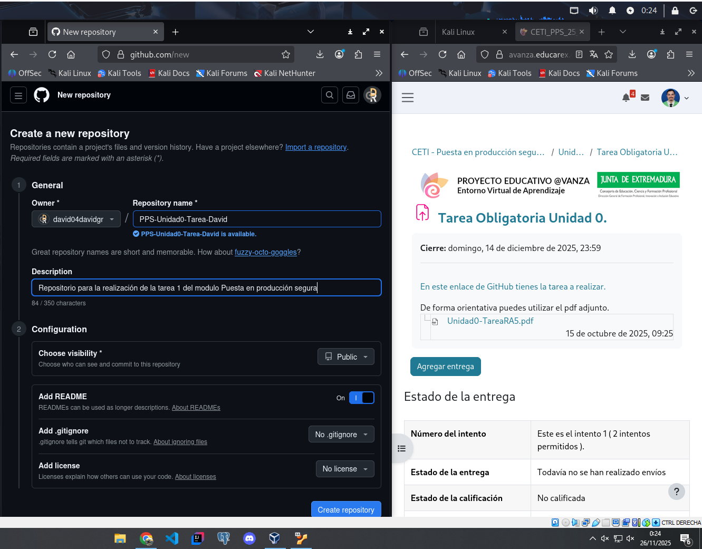
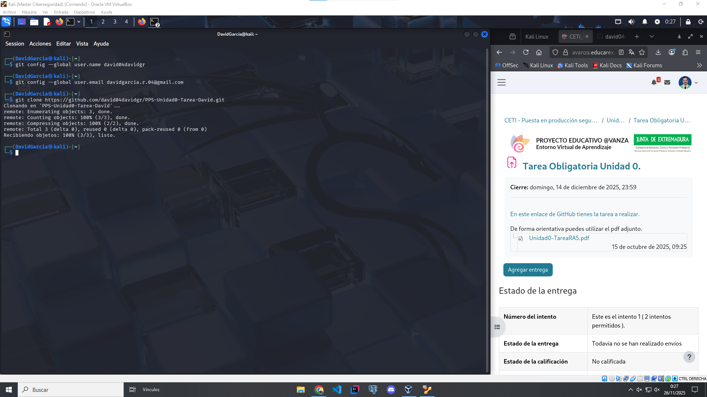
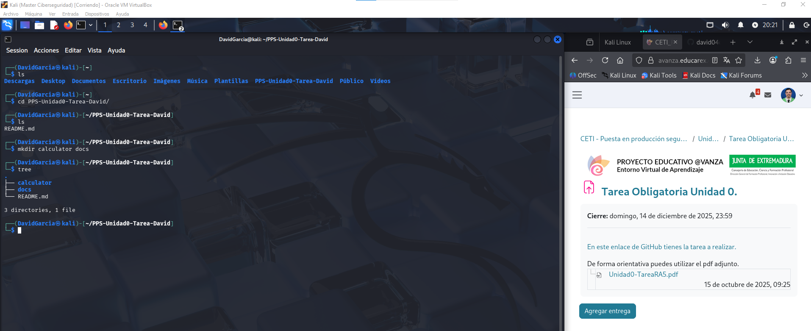
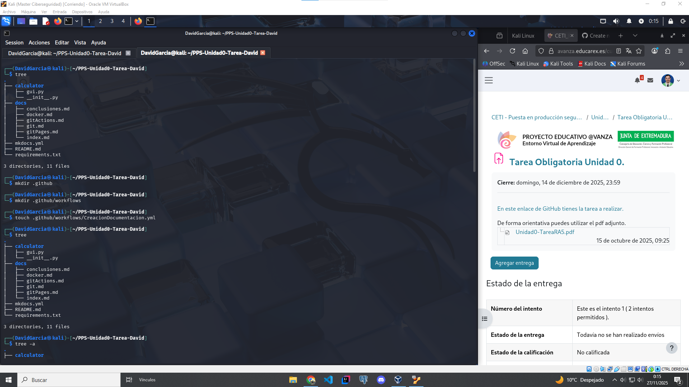
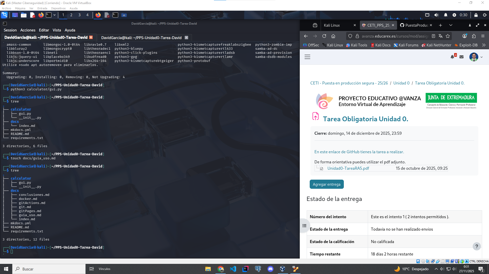
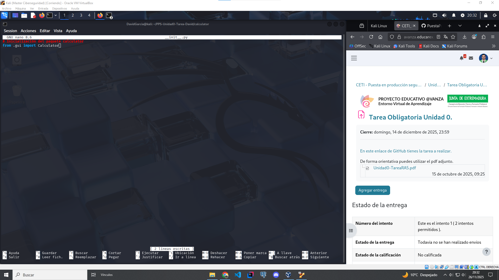
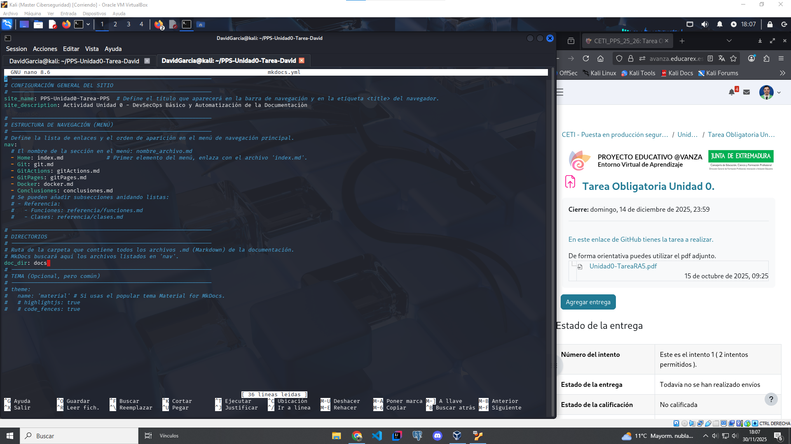

Git y Control de Versiones
En este documento se explica el flujo de trabajo de Git para la realizacion de la Tarea de la Unidad 0.
Requisitos y Flujo de trabajo
Se utilizó Git como sistema de control de versiones distribuido y GitHub como plataforma de repositorio remoto.
Requisitos:
-
Tener Git instalado localmente.
-
Una cuenta activa en GitHub.
Flujo de trabajo:
1. Creación del repositorio PPS-Unidad0-Tarea-David en GitHub
Creamos el nuevo repositorio desde la plataforma de GitHub, añadimos el nombre del repositorio, la descripción del mismo y activamos la creación del README

2. Configuración de git y clonación del proyecto
Accedemos a nuestra terminal, si no tenemos instalado Git lo instalamos con el siguiente comando:
sudo apt install git
cuando lo hayamos instalado correctamente, configuramos nuestro usuario de git con los datos de nuestra cuenta de Github ejecutando los siguientes comandos
git config --global user.name nombreUsuario
git config --global user.email emailUsuario
una vez configurado el usuario, pasamos a clonar el repositorio en nuestro entorno local con el siguiente comando
git clone enlaceRepositorio

3. Accedemos al directorio del repositorio en local
Una vez clonado el repositorio accedemos al mismo en el directorio local donde se ha almacenado, y podremos comprobar que se ha clonado correctamente
4. Comenzamos a crear el arbol de directorios y archivos requeridos
PPS-Unidad0-Tarea-Tu_nombre/
├── calculator/
│ ├── __init__.py
│ └── gui.py
├── docs/
│ └── index.md
│ └── git.md
│ └── gitActions.md
│ └── gitPages.md
│ └── docker.md
│ └── conclusiones.md
├── mkdocs.yml
├── requirements.txt
└── .github/
└── workflows/
└── CreacionDocumentacion.yml



y también introducimos el contenido correspondiente en cada fichero





5. Hacemos un commit y pusheamos a la rama main
Una vez hemos generado la estructura requerida e insertado los contenidos necesarios en cada fichero, añadimos los cambios al commit, lanzamos el commit y hacemos un push para subir este commit al repositorio.
Una vez hayamos hecho el push, veremos reflejado en la plataforma de Github los cambios subidos al repositorio.
Ahora pasamos al siguiente punto, Git Actions